Verkefni 3 — 3D prentun og 3D skönnun
Verkefnalýsing
Markmið verkefnis 3 í VÉL403G var að hanna módel fyrir 3D prentun sem ekki væri hægt að framkvæma með frádráttar framleiðslu og að prenta hlutinn. Annar partur af verkefninu var að 3D skanna einhvern hlut, t.d. með photogrammetríu.
Hópaverkefnið
Partur af verkefninu snerist um það að vera 3 saman að vinna í hóp, og sem hópur velja 3D prentara og ákvarða hönnunarreglur/þvinganir. Skráið á sameiginlegu vefsvæði. Hópurinn okkar samanstendur af mér, Jóni Lárusi og Sólveigu. Við skjalfestum hópaverkefnið með þessu frábæra myndbandi:
Eins og má sjá í myndbandinu prentuðum við út svona 3D printing tester en svipað stykki má finna hér. Stykkið kom svona út:
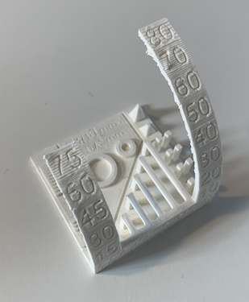
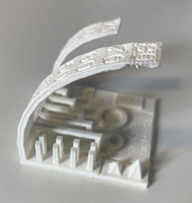
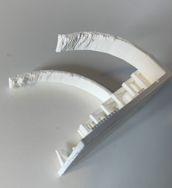
Eins og sést þá er smá vesen fyrir prentarann að prenta allt út sem er með meira en u.þ.b. 60-70 gráður. Því þarf að setja þær skorður inn í Ultimaker Cura til þess að vera viss um að hluturinn verði ekki eitthvað gallaður eftir prentun (minn hlutur þurfti hins vegar engar skorður þar sem það var ekkert af hlutnum yfir 60 gráður). Fyrir utan þessar skorður sem þurfti að taka tillit til var ekki mikið annað sem þurfti að skoða út frá þessu prófi.
Einstaklingsverkefnið — 3D Prentun
Hleðslustóllinn
Ég leitaði lengi og vel eftir einhvers konar innblástri á netinu og ákvað ég að leita eftir einhvers konar hleðslugúbbum fyrir Apple Watch. Meðal annars fann ég svona stóla sem voru með pláss fyrir hleðslutækinu þannig að maður gæti látið úrið í hleðslu á stólnum. Þetta fannst mér ansi flott og ég teiknaði upp stól fyrir mitt úr. Fyrsta gerð af stólnum leit svona út:
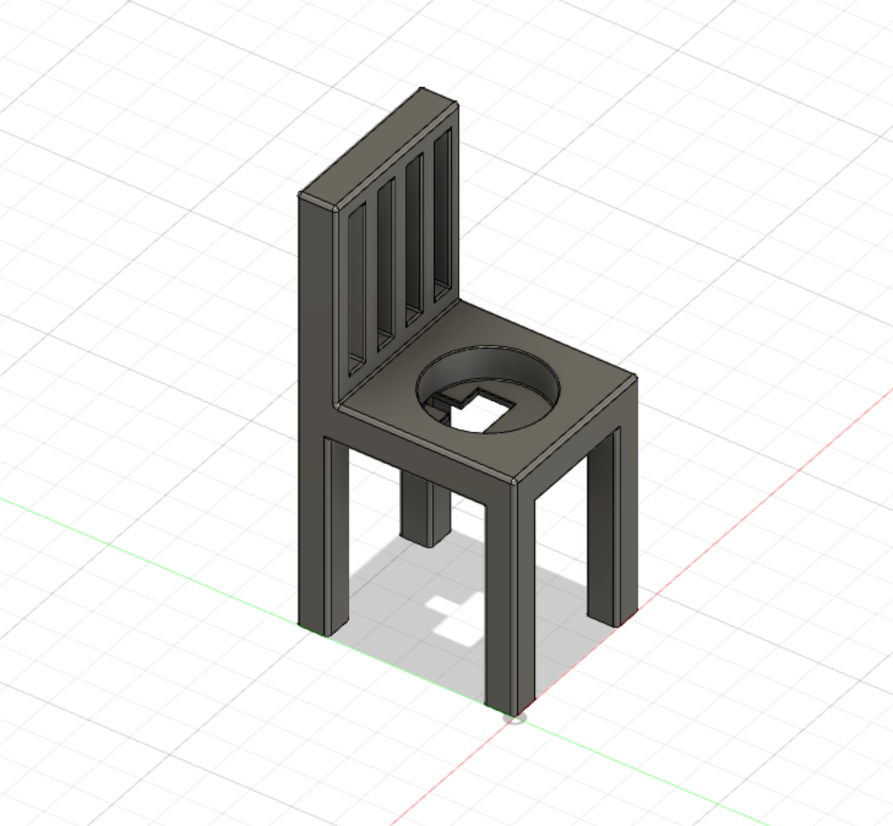
Ég hins vegar var ekki nógu varkár í mælingum mínum og þegar stóllinn var prentaður út var ekki nógu mikið pláss fyrir hleðslusnúruna þannig að hleðslutækið passaði engan veginn í stólinn. Aftur á móti gekk 3D prentunin mjög vel en mig langaði mikið að gera þetta rétt, þannig að ég lagaði mælingarnar til og prentaði stólinn aftur út. Fyrri gerðin af stólnum leit svona út 3D prentuð:
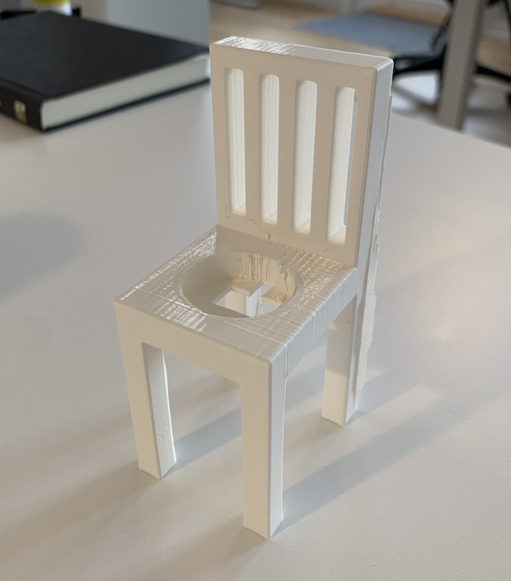
Ég ákvað eftir þetta að byrja upp á nýtt og lagfæra mælingar stólsins. Ég byrjaði á því að opna Fusion og ýtti fyrst á "Create Sketch". Þar teiknaði ég 54mm x 44mm kassa og ýtti svo á extrude upp 60mm. Eftir það skar ég út neðri 50mm og bætti við 4 fótum í öll horn sem voru 8mm x 8mm að þykkt. Svo extrude-aði ég upp bakinu á stólnum en bakið er 50mm að hæð. Svo skar ég út fjóra rétthyrninga í bakið til þess að gera hann fínni og til þess að þurfa að nota minna plast við prentunina. Eftir það þurfti smá fikt við extrude-ið á hringnum fyrir hleðslutækið en sem betur fer var ég með reynslu eftir fyrstu gerð stólsins. Hér fyrir neðan eru svo myndir af því hvernig stóllinn leit út eftir hvert skref:
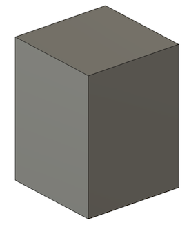
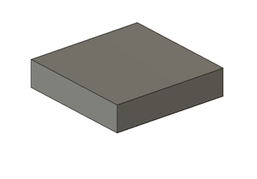
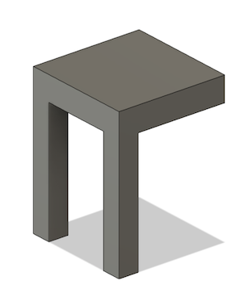
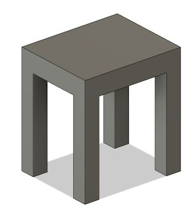
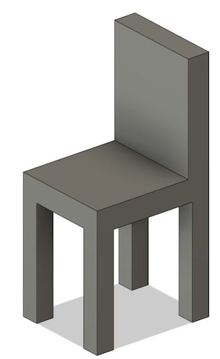
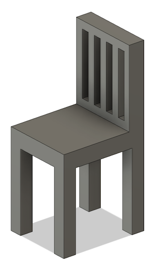
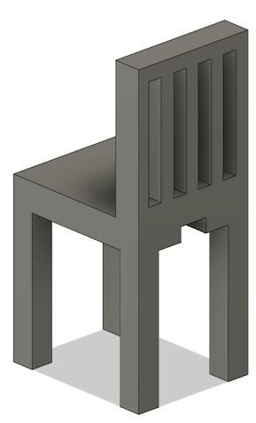
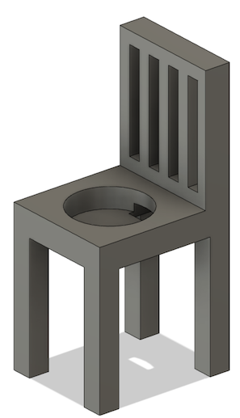
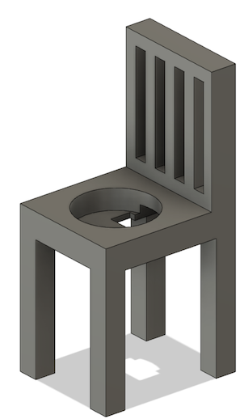
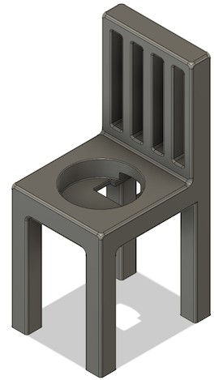
Ég passaði mig að laga til mælingarnar svo það væri alveg örugglega pláss til þess að setja hleðslusnúruna í gegn þannig að hringlaga parturinn af snúrunni kæmist í stólinn. Það sést að það er smá munur á fillet-inu líka, en það var bara til gamans til þess að sjá hver munurinn yrði. Það var ekkert mjög mikill munur á því að breyta fillet-inu en þessi seinni stóll svínvirkaði fyrir hleðslutækið og ég gat troðið því inn eins og sést aðeins neðar á síðunni.
Prentun
Eftir að hafa klárað að teikna upp stólinn aftur í réttum mælingum kom að prentun. Ég byrjaði á því að vista stólinn sem .stl file, setja inn á Ultimaker Cura forritið og ákveða stillingar fyrir prentarann sem ég og hópurinn völdu (Ultimaker 3). Svo setti ég fileinn yfir á USB-lykil sem var í boði í FabLab og tengdi lykilinn við prentarann og ýtti á print. Lokaútkoman var helvíti flott og gekk stóllinn eins og í lygasögu. Núna fær úrið sér alltaf smá pásu á daginn þegar það þarf að fara í hleðslu eins og sést á myndunum hér fyrir neðan:
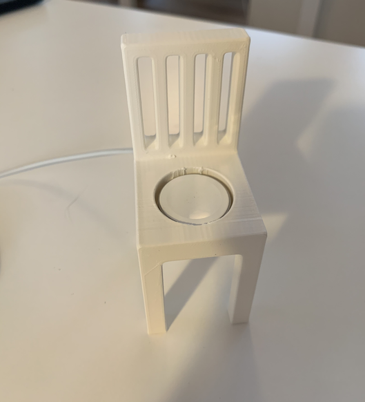
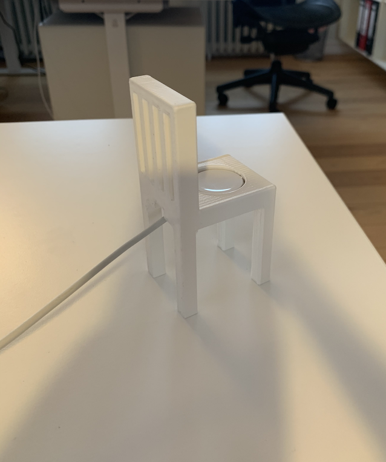
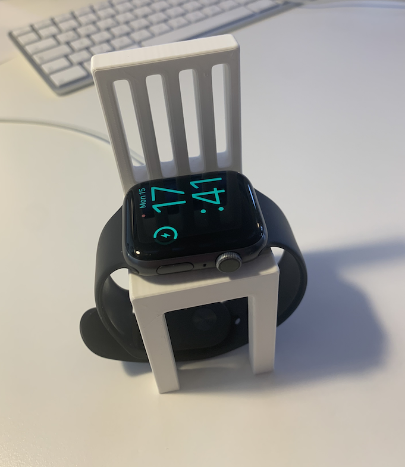
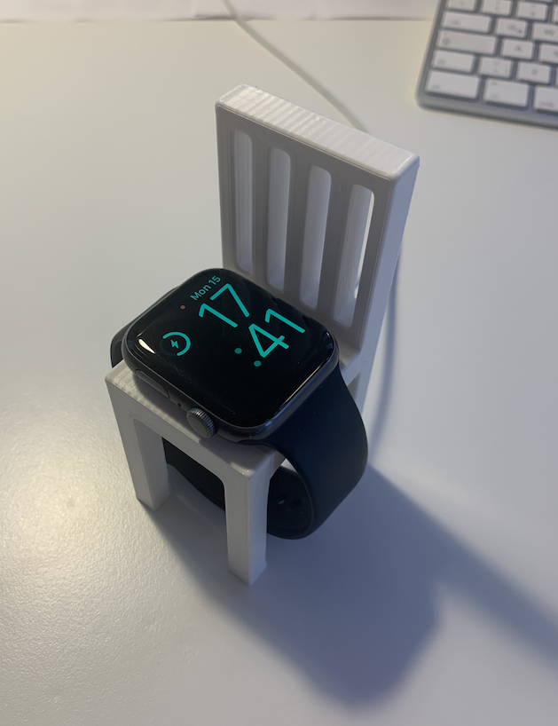
3D Skönnun
Eftir að hafa eytt miklum tíma í stólagerð og 3D prentun fólst næsti hluti verkefnisins í því að 3D skanna eitthvað. Ég ákvað að nota forritið Qlone í símanum mínum og skannaði ég PS5 fjárstýringu. Fyrst þurfti maður að prenta út svona smá mynstur á blað og setja svo hlutinn sem átti að skanna ofan á blaðið. Eftir það þurfti maður einfaldlega að fara eftir leiðbeiningum forritsins og taka upp hlutinn hægt og rólega frá öllum sjónarhornum. Þetta kom ágætlega út og það var skemmtilegt að prófa sig áfram í þessu. Myndirnar að neðan sýna hvernig ferlið fór fram og svo að lokum sést GIF sem sýnir lokaútkomuna:
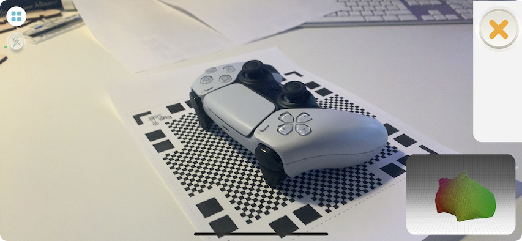
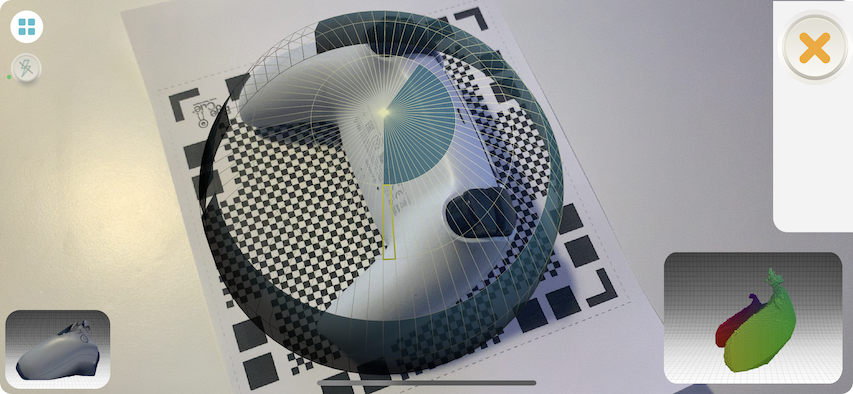
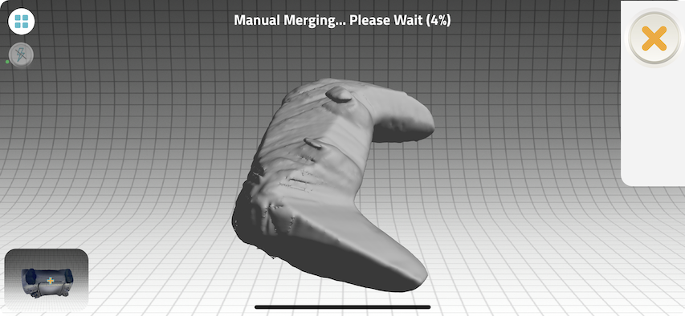
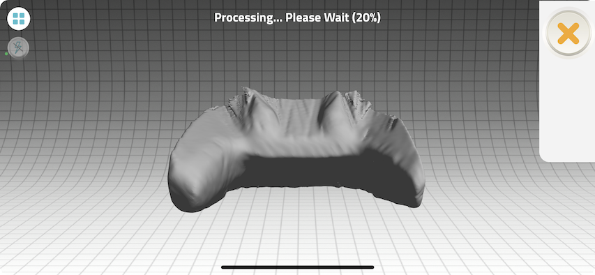


Niðurstaða og lokaorð
Þetta verkefni gekk stórfenglega vel og fannst mér ansi áhugavert að læra að nota 3D prentara og einnig var 3D skönnunin mjög áhugaverð.
Tímaskráning
Talsverður tími fór í að klára þetta verkefni en tímaskráningin er eins og stendur:
28. febrúar: 3 tímar í FabLab að læra á prentarann, fikta í Fusion o.fl.
1. mars: 5 tímar í FabLab að teikna upp stólinn, prenta hann út o.fl.
3. mars: 3 tímar í FabLab að prenta stólinn aftur.
7. mars: 4 tímar í vefsíðugerð og breytingum.
8. mars: 3 tímar í lokaskrefum á verkefninu og 3D skönnun.